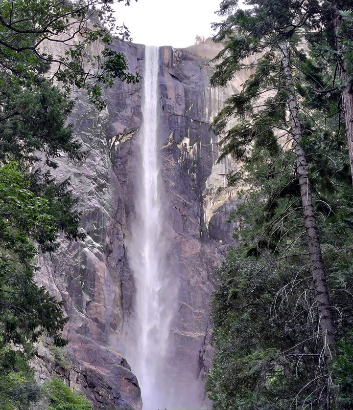

[旅遊] 優勝美地國家公園
Contents
單程要開車4小時，早上天還沒亮，4點就出門，要輪流睡覺，兩小時後到Merced吃麥當勞早餐。
路線
網路上有提到兩種路線上山，路線120比較崎嶇，我們選擇路線140相對平緩。
所以中繼城市選擇Merced，加油站很多，吃的也很多，有星巴克，
園區內網路訊號好不好，需要先下載離線地圖
官方有app可以看簡介
景點順序(都是開車)
- Tunnel View(早上版)
- Bridalveil Fall

- Yosemite falls
- Glacier point

- Tunnel View(下午版)

找車位不容易，運氣要很好
園區內設施
- 廁所不好找，流動廁所外的洗手台是腳踩給水

- 有垃圾桶
- 收費的附近訊號還不錯(方便刷信用卡？)
- 賣店不收現金
後記
很累，輪流開車很重要。
上面沒有食物要自備零食
水也是！